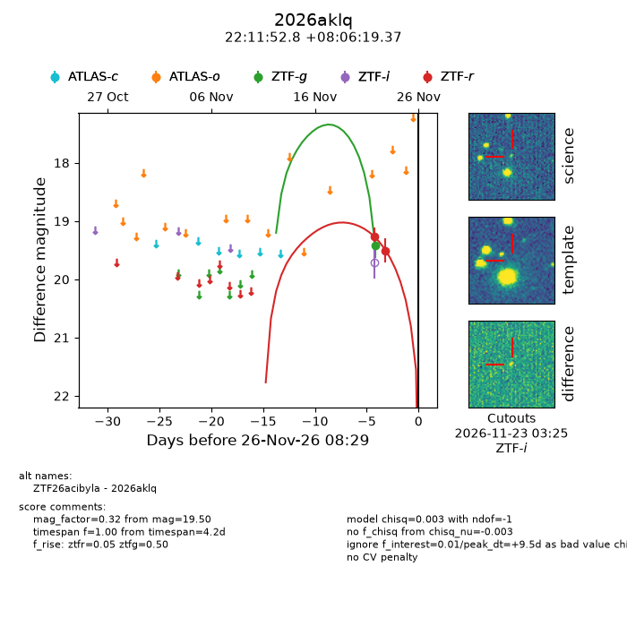
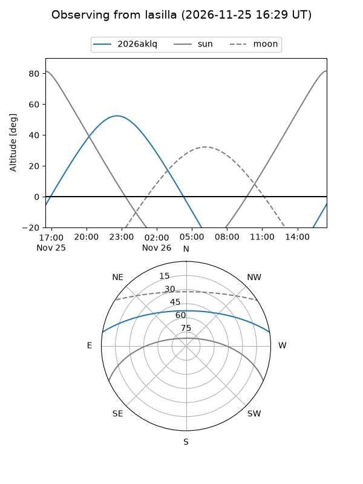
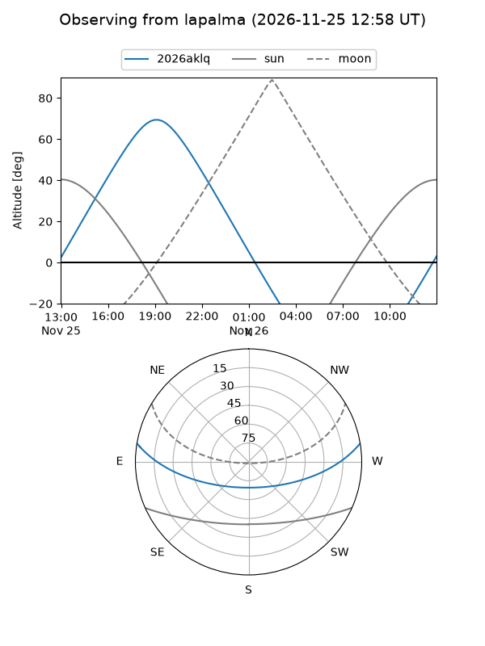
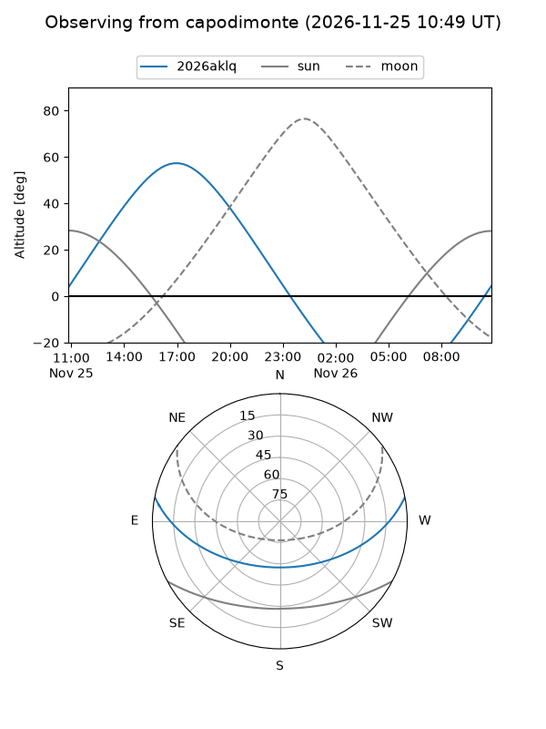
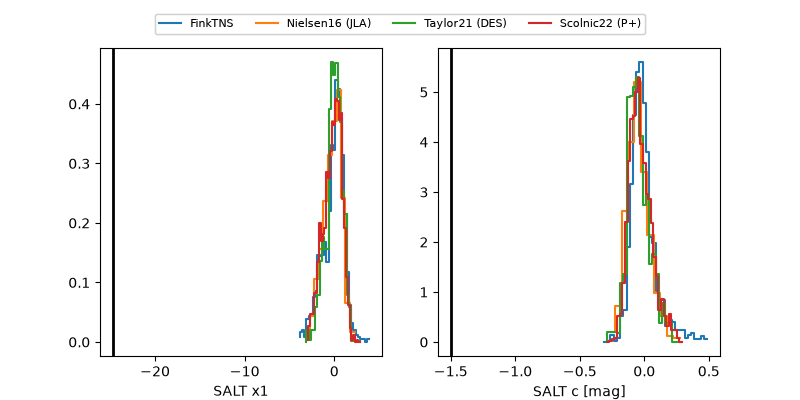

2026aklq
Target 2026aklq at 2026-11-26 08:31
Aliases and brokers:
FINK-ZTF: ztf.fink-portal.org/ZTF26acibyla
Lasair-ZTF: lasair-ztf.lsst.ac.uk/objects/ZTF26acibyla
ALeRCE-ZTF: alerce.online/object/ZTF26acibyla
YSE-PZ: ziggy.ucolick.org/yse/transient_detail/2026aklq
TNS name: wis-tns.org/object/2026aklq
Direct TNS query: direct search
alt names
ZTF26acibyla (ztf,fink_ztf)
2026aklq (tns,yse)
Coordinates:
equatorial (ra, dec) = 332.9700,+8.10538
equatorial (HMS+DMS) = 22:11:52.80,+08:06:19.37
galactic (l, b) = (69.5515,-37.71688)
Flags:
peak dt: +9.5
Photometry:
last ztfg=19.42, ztfr=19.50
1 ztfg, 2 ztfr detections
Lightcurve

Visibility



Additional plots
